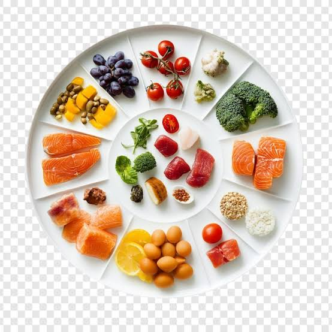
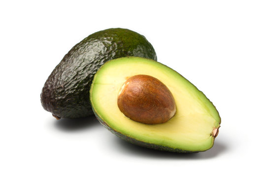

Welcome to Healthy Bites!Discover the benefits of healthy eating and learn how to create balanced meals every day.  Healthy eating is not about strict diets. It is about making better food choices and building healthy habits. Explore Healthy Foods |
Discover Healthy Foods
Discover nutritious foods that can help you maintain a balanced and healthy lifestyle.
|
 AvocadoAvocados are rich in healthy fats and vitamins. They are a delicious addition to balanced meals. |
BlueberriesBlueberries contain antioxidants and vitamins and are perfect for breakfast or snacks. |
OatsOats are a good source of fiber and provide energy to help you start your day. |
Next Page